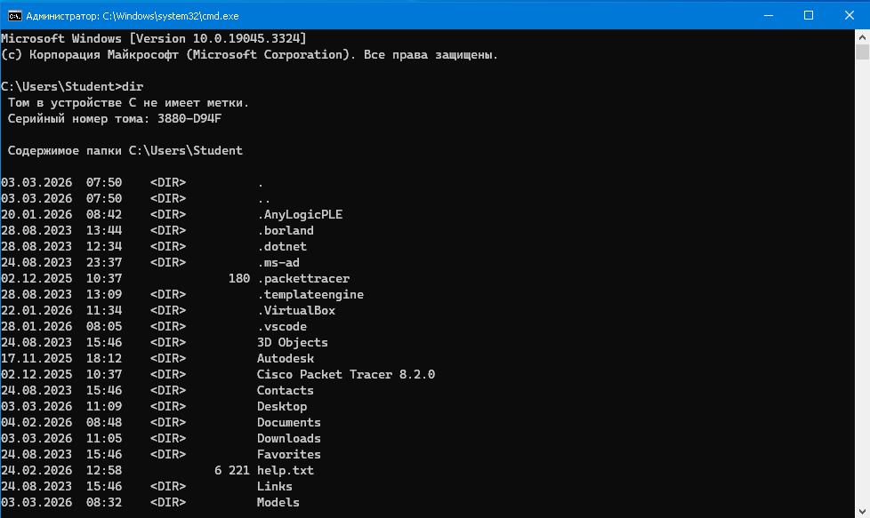
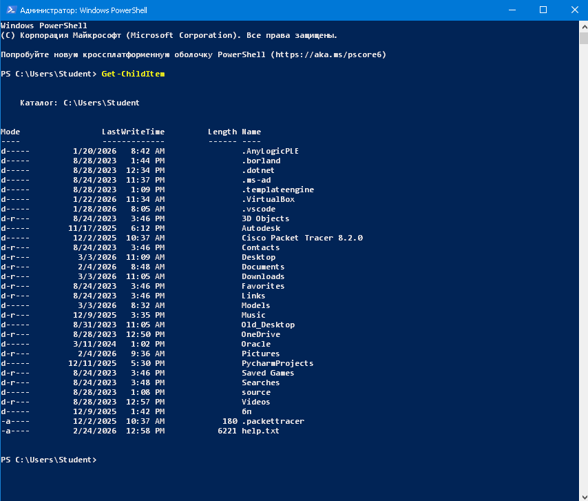
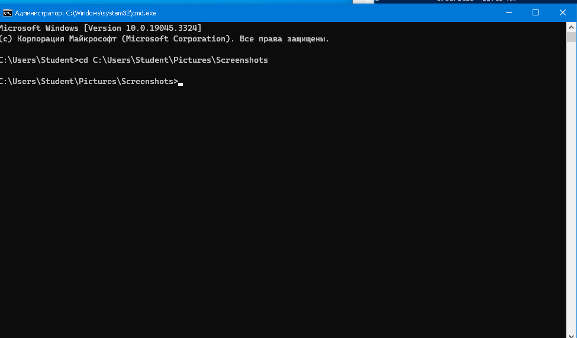
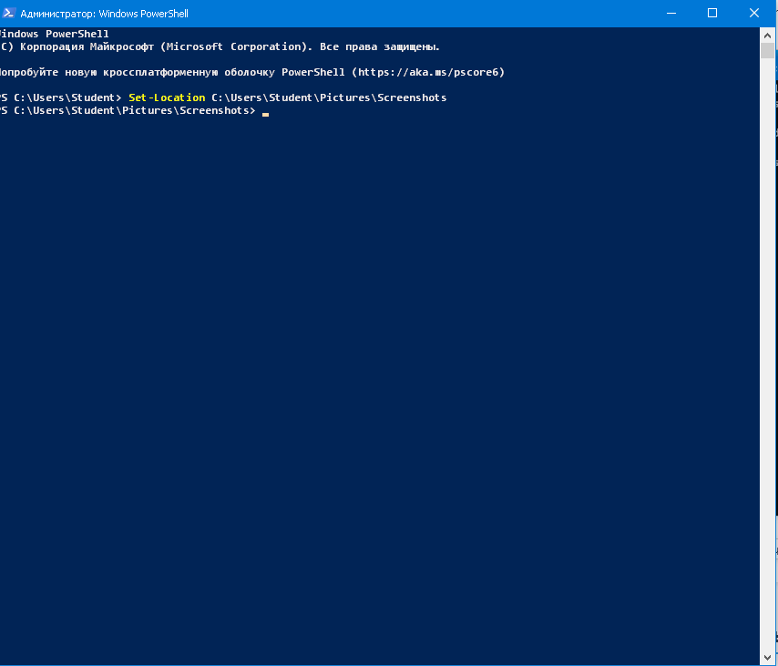
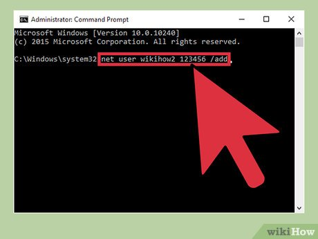
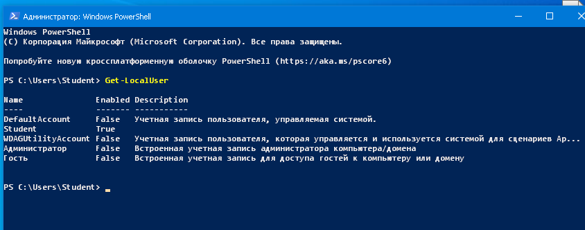
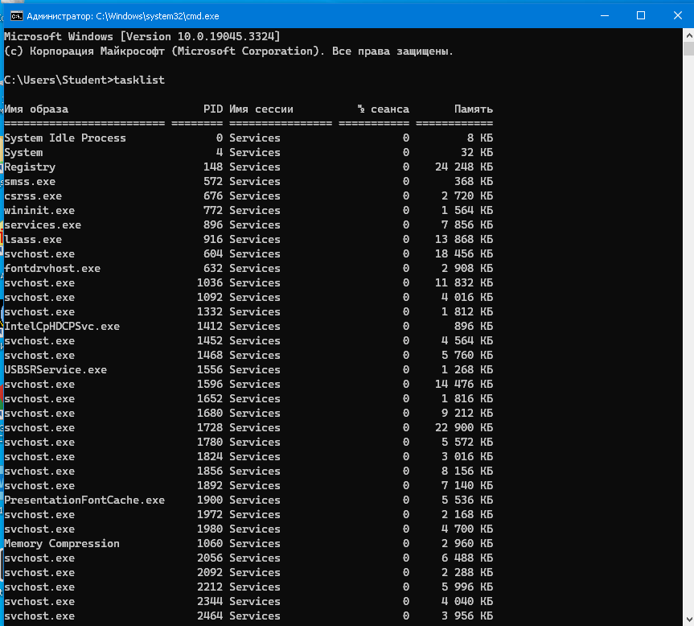
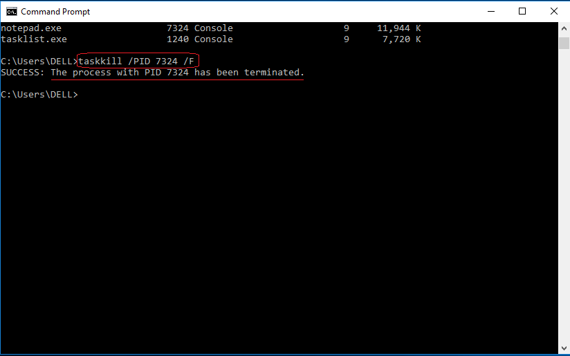
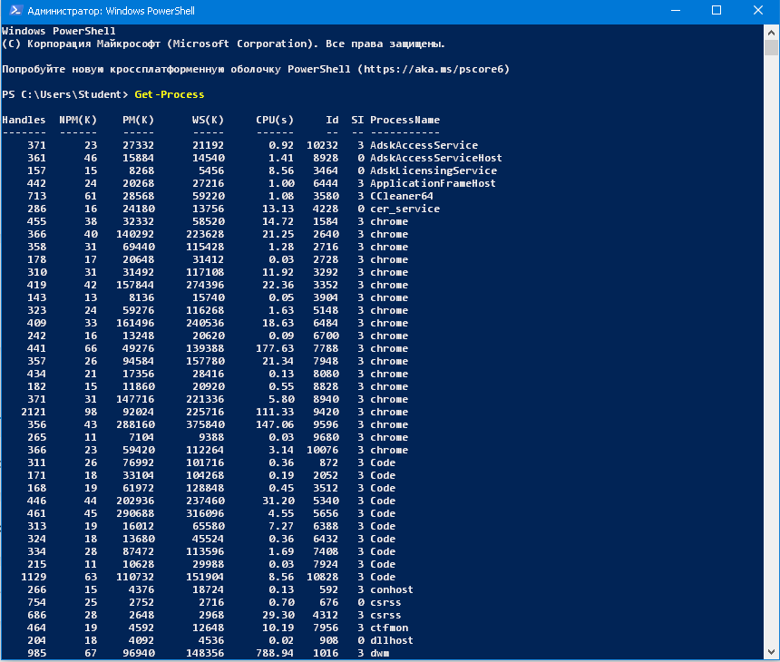

(CMD и PowerShell)

Рисунок 1 — команда dir выводит список файлов и папок в текущем каталоге. В таблице отображаются дата изменения, атрибуты и размер файлов, что помогает администратору быстро оценить структуру каталога.

Рисунок 2 — команда Get-ChildItem в PowerShell показывает содержимое каталога в структурированном виде: режим доступа, дата изменения, размер и имя. Такой формат удобен для фильтрации и автоматизации.

Рисунок 3 — команда cd изменила рабочую директорию на C:\Users\Student\Pictures\Screenshots. Приглашение командной строки обновилось, подтверждая успешный переход.

Рисунок 4 — команда Set-Location в PowerShell выполняет аналогичный переход. После выполнения приглашение оболочки показывает новый путь.

Рисунок 5 — команда net user создаёт нового пользователя с заданным именем и паролем. Это используется администраторами для управления локальными учётными записями.

Рисунок 6 — команда Get-LocalUser выводит список локальных пользователей, их статус (включены/отключены) и описание. Это позволяет быстро проверить активные учётные записи.

Рисунок 7 — команда tasklist показывает список всех запущенных процессов: имя, PID, сессия и объём памяти. Это помогает отслеживать активные приложения и службы.

Рисунок 8 — команда taskkill завершает процесс по его PID. В выводе подтверждается успешное завершение, что полезно для принудительного закрытия зависших приложений.

Рисунок 9 — команда Get-Process выводит список процессов с указанием дескрипторов, памяти, CPU и идентификатора. Такой формат удобен для анализа производительности.
Practice на диске C. Скопируйте туда текстовый файл и удалите его через командную строку.TestUser, проверьте список пользователей и удалите его.notepad, найдите процесс и завершите его через команду.